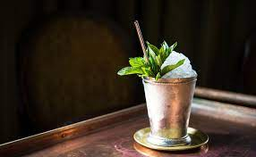

Mint Julep

An essential to anyone's whiskey experience, the mint julep is
one of the freshest cocktails you will find. Fresh mint, sugar, your favorite bourbon,
and a little work with the muddler, and it's done. This one is also so popular that
the basic recipe has inspired countless julep variations, which are equally delightful.
Ingredients
- 8 mint leaves
- 1/4 ounce simple syrup
- 2 ounces bourbon
- Garnish: mint sprig
- Garnish: Angostura bitters (optional)
Steps
- In a Julep cup or rocks glass, lightly muddle the mint leaves in the
simple syrup.
- Add the bourbon then pack the glass tightly with crushed ice.
- Stir until the cup is frosted on the outside.
- Top with more crushed ice to form an ice dome, and garnish with the mint
sprig and a few drops of bitters (optional).